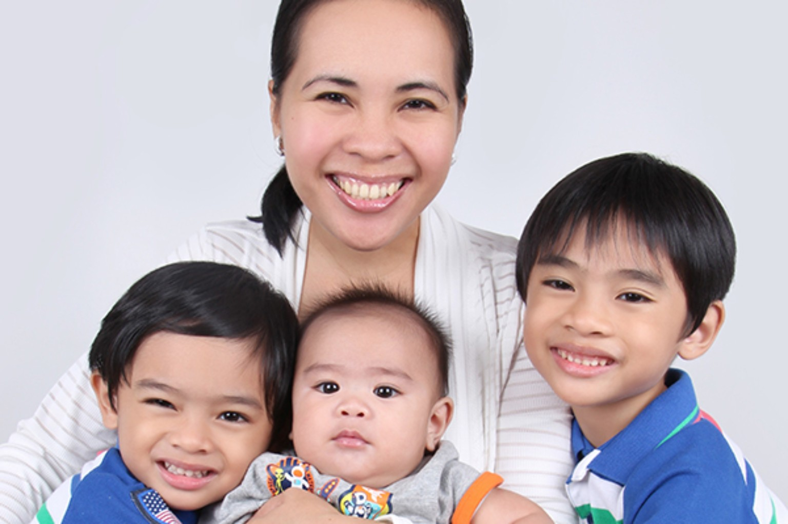

RA
9262Protection is a right.
9262Protection is a right.
01 / WHY THIS MATTERS
Behind every statistic is a human story.
Violence against women and children is not always visible. It can be physical, emotional, sexual, or financial. Recognizing abuse is an important step toward preventing it.
Republic Act No. 9262 provides protection and legal remedies for women and their children experiencing violence in relationships covered by the law.
Read the full law ↗